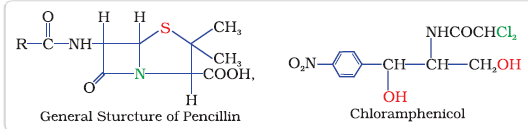

In this Section, we shall discuss the therapeutic action of a few important classes of drugs.
Over production of acid in the stomach causes irritation and pain. In severe cases, ulcers are developed in the stomach. Until 1970, only treatment for acidity was administration of antacids, such as sodium hydrogencarbonate or a mixture of aluminium and magnesium hydroxide. However, excessive hydrogencarbonate can make the stomach alkaline and trigger the production of even more acid. Metal hydroxides are better alternatives because of being insoluble, these do not increase the pH above neutrality. These treatments control only symptoms, and not the cause. Therefore, with these metal salts, the patients cannot be treated easily. In advanced stages, ulcers become life threatening and its only treatment is removal of the affected part of the stomach.
Histamine is a potent vasodilator. It has various functions. It contracts the smooth muscles in the bronchi and gut and relaxes other muscles, such as those in the walls of fine blood vessels. Histamine is also responsible for the nasal congestion associated with common cold and allergic response to pollen.
Tranquilizers and analgesics are neurologically active drugs. These affect the message transfer mechanism from nerve to receptor.
Some tranquilizers namely, chlordiazepoxide and meprobamate, are relatively mild tranquilizers suitable for relieving tension. Equanil is used in controlling depression and hypertension.
Derivatives of barbituric acid viz., veronal, amytal, nembutal, luminal and seconal constitute an important class of tranquilizers. These derivatives are called barbiturates. Barbiturates are hypnotic, i.e., sleep producing agents. Some other substances used as tranquilizers are valium and serotonin.
They reduce or abolish pain without causing impairment of consciousness, mental confusion, incoordination or paralysis or some other disturbances of nervous system. These are classified as follows:
(i) Non-narcotic (non-addictive) analgesics
(ii) Narcotic drugs
(i) Non-narcotic (non-addictive) analgesics: Aspirin and paracetamol belong to the class of non-narcotic analgesics. Aspirin is the most familiar example. Aspirin inhibits the synthesis of chemicals known as prostaglandins which stimulate inflammation in the tissue and cause pain. These drugs are effective in relieving skeletal pain such as that due to arthritis. These drugs have many other effects such as reducing fever (antipyretic) and preventing platelet coagulation. Because of its anti blood clotting action, aspirin finds use in prevention of heart attacks.
(ii) Narcotic analgesics: Morphine and many of its homologues, when administered in medicinal doses, relieve pain and produce sleep. In poisonous doses, these produce stupor, coma, convulsions and ultimately death. Morphine narcotics are sometimes referred to as opiates, since they are obtained from the opium poppy.
These analgesics are chiefly used for the relief of postoperative pain, cardiac pain and pains of terminal cancer, and in child birth.Diseases in human beings and animals may be caused by a variety of microorganisms such as bacteria, virus, fungi and other pathogens. An antimicrobial tends to destroy/prevent development or inhibit the pathogenic action of microbes such as bacteria (antibacterial drugs), fungi (antifungal agents), virus (antiviral agents), or other parasites (antiparasitic drugs) selectively. Antibiotics, antiseptics and disinfectants are antimicrobial drugs.
H.W. Florey and Alexander Fleming shared the Nobel prize for Medicine in 1945 for their independent contributions to the development of penicillin.
Antibiotics have either cidal (killing) effect or a static (inhibitory) effect on microbes. A few examples of the two types of antibiotics are as follows:
| Bactericidal | Bacteriostatic |
| Penicillin | Erythromycin |
| Aminoglycosides | Tetracycline |
| Ofloxacin | Chloramphenicol |
The range of bacteria or other microorganisms that are affected by a certain antibiotic is expressed as its spectrum of action. Antibiotics which kill or inhibit a wide range of Gram-positive and Gram-negative bacteria are said to be broad spectrum antibiotics. Those effective mainly against Gram-positive or Gram-negative bacteria are narrow spectrum antibiotics. If effective against a single organism or disease, they are referred to as limited spectrum antibiotics. Penicillin G has a narrow spectrum. Ampicillin and Amoxycillin are synthetic modifications of penicillins. These have broad spectrum. It is absolutely essential to test the patients for sensitivity (allergy) to penicillin before it is administered. In India, penicillin is manufactured at the Hindustan Antibiotics in Pimpri and in private sector industry.

Antiseptics and disinfectants are also the chemicals which either kill or prevent the growth of microorganisms.
Disinfectants are applied to inanimate objects such as floors, drainage system, instruments, etc. Same substances can act as an antiseptic as well as disinfectant by varying the concentration. For example, 0.2 per cent solution of phenol is an antiseptic while its one percent solution is disinfectant.
Antibiotic revolution has provided long and healthy life to people. The life expectancy has almost doubled. The increased population has caused many social problems in terms of food resources, environmental issues, employment, etc. To control these problems, population is required to be controlled. This has lead to the concept of family planning. Antifertility drugs are of use in this direction. Birth control pills essentially contain a mixture of synthetic estrogen and progesterone derivatives. Both of these compounds are hormones. It is known that progesterone suppresses ovulation. Synthetic progesterone derivatives are more potent than progesterone. Norethindrone is an example of synthetic progesterone derivative most widely used as antifertility drug. The estrogen derivative which is used in combination with progesterone derivative is ethynylestradiol (novestrol).